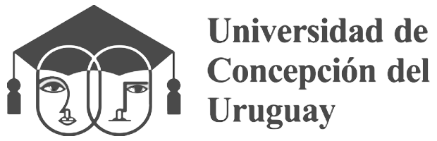
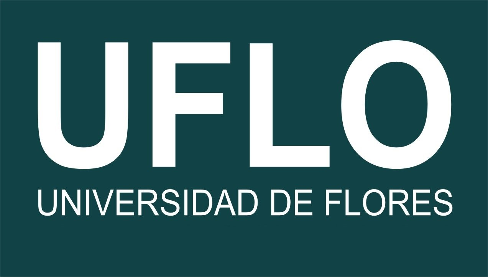

Continuidad Universitaria y Convenios
Tu formación continua: en el ISA acompañamos el crecimiento profesional de nuestros egresados.
Acompañamos tu desarrollo profesional
En el Instituto San Ambrosio creemos que la formación no termina con la obtención de un título. Por eso, generamos convenios de articulación con universidades que permiten a nuestros estudiantes y egresados ampliar su formación académica, acceder a nuevas titulaciones y proyectar su futuro profesional.
A través de estos acuerdos, nuestra comunidad educativa cuenta con nuevas oportunidades para continuar sus estudios universitarios.

Convenio AcadémicoUniversidad de Concepción del Uruguay (UCU)
Gracias al convenio con la Universidad de Concepción del Uruguay, nuestros egresados pueden acceder a esta propuesta de formación universitaria:
- Licenciatura en Gestión Social
- Ciclo de Complementación Curricular.
- Duración: 2 años.
- Modalidad: 100 % a distancia.
- Título oficial con validez nacional.

Convenio AcadémicoUniversidad de Flores (UFLO)
Licenciaturas disponibles:
- Licenciatura en Ciencias de la Educación.
- Licenciatura en Psicopedagogía.
- Licenciatura en Psicología.
Ingreso directo, sin necesidad de gestionar equivalencias, según las condiciones del convenio.
Requisitos y Condiciones
Consultanos para conocer los requisitos, las condiciones de ingreso y cómo acceder a estos beneficios.
Secretaría Académica
sanambrosiosuperior@gmail.com